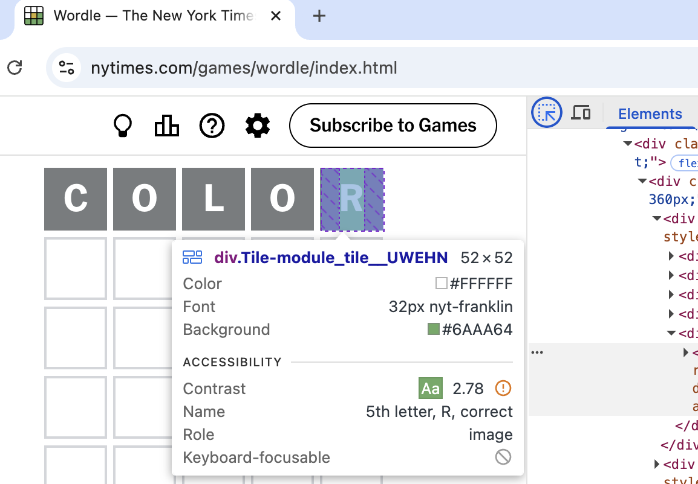

Whether you want to adjust an existing colour scheme to be more accessible or build an accessible colour palette from scratch, here are some tools to help you out.
Improve colour scheme
Most of the time we don't need to create a whole new colour palette from scratch, just tweak the existing colours to make them more accessible.
How to find contrast issues
In almost every browser, the selection tool will show you the colour contrast ratio of text elements.
For Chrome try this:
Open the developer tools with right click, option 'Inspect', then pick the select icon
Hover over an element on the page to find the contrast ratio
Some browsers (e.g. Firefox) will also show you the WCAG level it meets (if any)

The select tool in the developer tools panel shows a color contrast issue with a ratio of 2.78
While color simulators can never replace testing your product with disabled users, they can still be a useful reminder that colour can be experienced in many different ways.